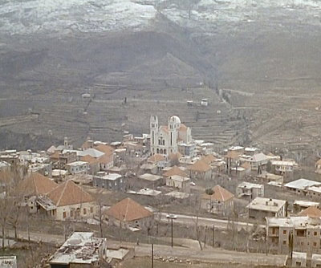
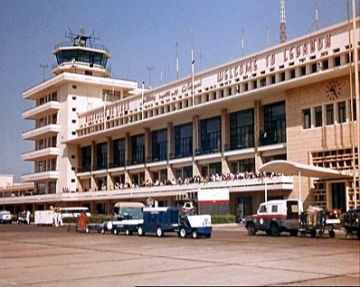
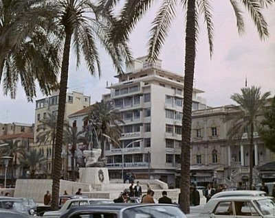
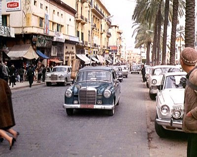
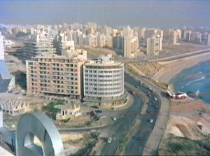
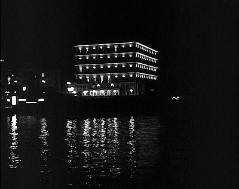
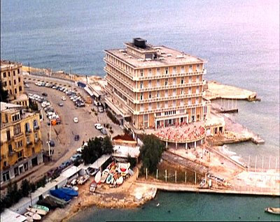

DANGER MAN: The Man With The Foot (Jeremy
Summers: 1966)
Establishing shot of village in the rain as John Drake goes on a forced
vacation to Banalos, a Spanish town in the Pyrenees.
MAN IN A SUITCASE:
Night Flight to Andorra
(Freddie Francis: December 1967)
Establishing footage of Andorran Town nestling in the Pyrenees.
Beirut International Airport

DANGER MAN: The Galloping Major (Peter
Maxwell: 1964)
John Drake flies into the capital city of an African country to
investigate a possible coup.
DANGERMAN: Yesterday's Enemies (Charles
Crichton: 1964)
Drake and Mrs Dutton go Brett’s Beirut apartment to confront him.
DANGER MAN: Sting in the Tail (Peter
Yartes: 1965)
John Drake flies into Drake flies into Beirut to catch up with assassin
Noureddine.
DANGER MAN: Judgement Day (Don Chaffey:
1965)
John Drake flies into Drake flies into Amman to catch a connecting
flight to London.
DANGERMAN: Yesterday's Enemies (Charles
Crichton: 1964)
Drake and Mrs Dutton go Brett’s Beirut apartment to confront him.
DEPARTMENT S: A Fish Out of Water (Cyril
Frankel: April 1969)
Interpol agent Birney arrives by jetliner at Lebanon’s International
Airport.
Rue Jeanne Darc

THE SAINT:
The Russian Prisoner (Peter
Moxey: February 1966)
In
Geneva, Professor Karel Jorovitch takes a taxi from the Embassy and is
followed by Russian security officers (Dodge Hall, American University
of Beirut in the background).
(Identified by Sietse Postma, July 2023)


THE CHAMPIONS: Get Me Out of Here! (Cyril
Frankel: )
Establishing shot of the streets of San Dios (Place des Martyrs) (World
Backgrounds 9624)
DEPARTMENT S: A Fish Out of Water (Cyril
Frankel: April 1969)
A customs officer from the airport goes to Takla’s Beirut office to
identify possible Interpol agents flying into the country. He
recognises a photograph of Jason King.

JASON KING: Nadine
Hotel where auditions are being held (World backgrounds
13672).
THE PROTECTORS:
Vocal (Cyril Frankel:
1972)
Harry’s hotel where Harry is staying (World backgrounds 13672).


DANGER MAN: The Affair At Castelevara
(Quentin Lawrence: 1964)
Drake's hotel.
DEPARTMENT S: A Fish Out of Water (Cyril
Frankel: April 1969)
Jason King is sent to Beirut to find Rafic and test the opposition’s
strength.
DANGER MAN: Yesterday's Enemies (Charles
Crichton: 1964)
Drake and Mrs Dutton go Brett’s Beirut apartment to confront him.
DANGER MAN: A
Date with Doris (Quentin Lawrence: 1964)
Juana Romero goes to visit Drake in his hotel.
Return to Index